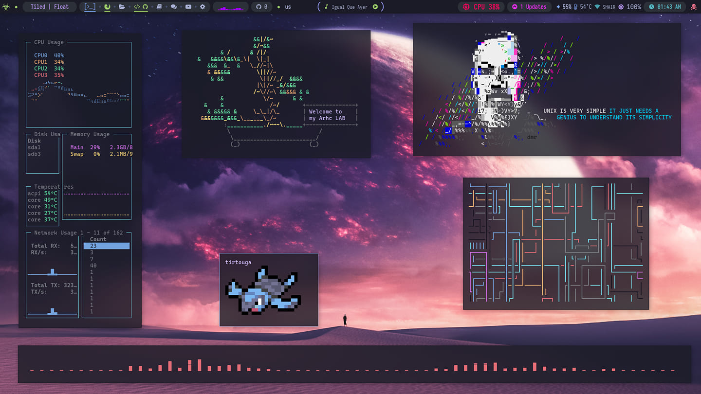
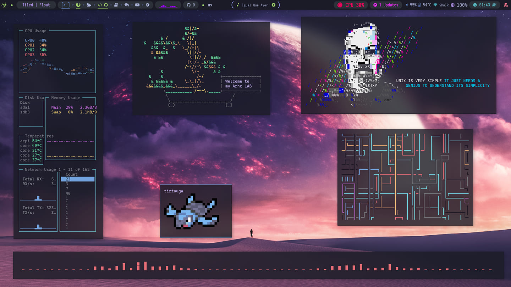

Pequeña Historia
El proyecto Debian fue fundado en el año 1993 por Ian Murdock, después de haber estudiado en la Universidad de Purdue.
Él escribió el manifiesto de Debian, que utilizó como base para la creación de la distribución Linux Debian. Dentro de este texto, los puntos destacables son:
mantener la distribución de manera abierta, coherente al espíritu del núcleo Linux y de GNU. El nombre de este se basa en la combinación del nombre de su entonces novia
(posteriormente esposa) "Deborah" con su propio nombre: "Ian", formando el acrónimo: Debian, pronunciado como las sílabas correspondientes de estos nombres en inglés americano: /dɛbˈiːjən/.
1Ubuntu
Ubuntu es una distribución GNU/Linux que ofrece un interesante sistema operativo para equipos de escritorio y servidores en el ámbito educativo. Es una distribución basada en Debian cuyas principales características son: Facilidad de manejo y Actualizaciones frecuentes.
2Kali Linux
Kali Linux es un sistema operativo que se utiliza principalmente para proteger y optimizar ordenadores y redes al igual que para descifrar contraseñas. Dado que estas características también pueden utilizarse con fines ilegales, la distribución no carece de polémica. Es una distribución basada en Debian cuyas principales características son enfocadas a Hacking Etico
3ParrotOS
Parrot OS, también conocido como Parrot Security OS, es una distribución de Linux basada en Debian que actúa como un laboratorio completo y portable para realizar operaciones acerca de ciberseguridad, pentesting y análisis forense, entre otras cosas, desarrollado por Frozenbox Team.
Galeria sobre Distribuciones basadas en Debian
 
